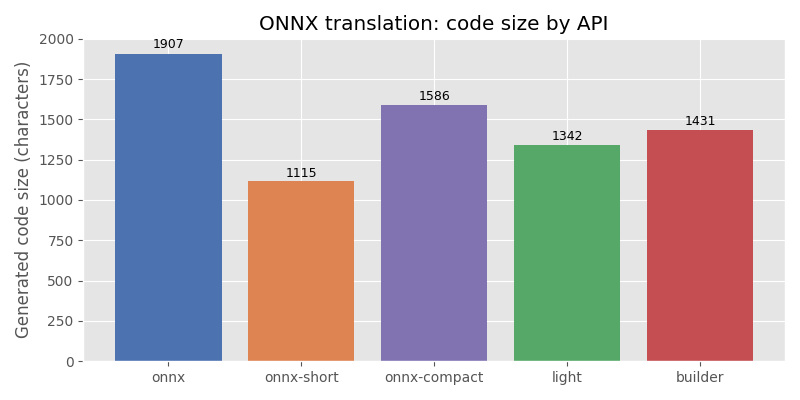
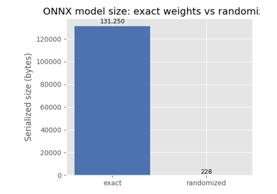

Note
Go to the end to download the full example code.
Comparing the five ONNX translation APIs#
translate converts an
onnx.ModelProto into Python source code that, when executed,
recreates the same model. Five output APIs are available:
"onnx"— usesonnx.helper(oh.make_node,oh.make_graph, …) viaInnerEmitter."onnx-short"— same as"onnx"but replaces large initializers with random values to keep the snippet compact, viaInnerEmitterShortInitializer."onnx-compact"— produces a single nested expression instead of assembling separate lists of nodes/inputs/outputs, viaInnerEmitterCompact."light"— fluentstart(…).vin(…).…chain, viaLightEmitter."builder"—GraphBuilder-based function wrapper, viaBuilderEmitter.
This example builds a small model, translates it with every API, shows the
generated code, and verifies that the "onnx" snippet can be re-executed to
reproduce the original model.
import numpy as np
import onnx
import onnx.helper as oh
import onnx.numpy_helper as onh
from yobx.translate import translate, translate_header
Build the model#
We use Z = Relu(X @ W + b) as a running example:
a single Gemm followed by Relu.
TFLOAT = onnx.TensorProto.FLOAT
INT64 = onnx.TensorProto.INT64
W = onh.from_array(np.random.randn(8, 5).astype(np.float32), name="W")
b = onh.from_array(np.random.randn(5).astype(np.float32), name="b")
model = oh.make_model(
oh.make_graph(
[oh.make_node("Gemm", ["X", "W", "b"], ["T"]), oh.make_node("Relu", ["T"], ["Z"])],
"gemm_relu",
[oh.make_tensor_value_info("X", TFLOAT, [None, 8])],
[oh.make_tensor_value_info("Z", TFLOAT, [None, 5])],
[W, b],
),
opset_imports=[oh.make_opsetid("", 17)],
ir_version=9,
)
print(f"Model: {len(model.graph.node)} node(s), {len(model.graph.initializer)} initializer(s)")
Model: 2 node(s), 2 initializer(s)
1. "onnx" API — full initializer values#
The generated code uses onnx.helper.make_node(),
onnx.helper.make_graph(), and onnx.helper.make_model().
Every initializer is serialised as an exact np.array(…) literal.
=== api='onnx' ===
opset_imports = [
oh.make_opsetid('', 17),
]
inputs = []
outputs = []
nodes = []
initializers = []
sparse_initializers = []
functions = []
initializers.append(
onh.from_array(
np.array([[-0.15925535559654236, -1.2812327146530151, -1.0368164777755737, -1.215502142906189, -1.4126988649368286], [0.8341672420501709, -0.9502255320549011, 1.1940639019012451, 1.7847238779067993, 2.1529347896575928], [0.42822882533073425, 1.1302639245986938, 0.38854289054870605, 0.7721517086029053, -1.063621163368225], [-0.11926223337650299, -0.29710322618484497, 1.1446144580841064, 0.5153269171714783, -1.4401946067810059], [-0.7345747947692871, 0.23754216730594635, -0.4370018243789673, -0.30932971835136414, -1.2728822231292725], [-0.2688453197479248, 3.1766884326934814, -0.8795385360717773, -0.4991382956504822, -0.9472166895866394], [0.3999825119972229, 1.1111376285552979, 0.08858621120452881, 0.17431622743606567, -0.9311348795890808], [-2.427452564239502, 0.7959164381027222, -2.3500027656555176, -0.8771902918815613, -0.13790106773376465]], dtype=np.float32),
name='W'
)
)
initializers.append(
onh.from_array(
np.array([-1.1833235025405884, -0.43171149492263794, -1.003373146057129, 0.7246853709220886, -2.0756285190582275], dtype=np.float32),
name='b'
)
)
inputs.append(oh.make_tensor_value_info('X', onnx.TensorProto.FLOAT, shape=(None, 8)))
nodes.append(
oh.make_node(
'Gemm',
['X', 'W', 'b'],
['T']
)
)
nodes.append(
oh.make_node(
'Relu',
['T'],
['Z']
)
)
outputs.append(oh.make_tensor_value_info('Z', onnx.TensorProto.FLOAT, shape=(None, 5)))
graph = oh.make_graph(
nodes,
'gemm_relu',
inputs,
outputs,
initializers,
sparse_initializer=sparse_initializers,
)
model = oh.make_model(
graph,
functions=functions,
opset_imports=opset_imports,
ir_version=9,
)
2. "onnx-short" API — large initializers replaced by random values#
Identical to "onnx" except that initializers with more than 16 elements
are replaced by np.random.randn(…) / np.random.randint(…) calls.
This keeps the snippet readable when dealing with large weight tensors.
code_short = translate(model, api="onnx-short")
print("=== api='onnx-short' ===")
print(code_short)
=== api='onnx-short' ===
opset_imports = [
oh.make_opsetid('', 17),
]
inputs = []
outputs = []
nodes = []
initializers = []
sparse_initializers = []
functions = []
value = np.random.randn(8, 5).astype(np.float32)
initializers.append(
onh.from_array(
np.array(value, dtype=np.float32),
name='W'
)
)
initializers.append(
onh.from_array(
np.array([-1.1833235025405884, -0.43171149492263794, -1.003373146057129, 0.7246853709220886, -2.0756285190582275], dtype=np.float32),
name='b'
)
)
inputs.append(oh.make_tensor_value_info('X', onnx.TensorProto.FLOAT, shape=(None, 8)))
nodes.append(
oh.make_node(
'Gemm',
['X', 'W', 'b'],
['T']
)
)
nodes.append(
oh.make_node(
'Relu',
['T'],
['Z']
)
)
outputs.append(oh.make_tensor_value_info('Z', onnx.TensorProto.FLOAT, shape=(None, 5)))
graph = oh.make_graph(
nodes,
'gemm_relu',
inputs,
outputs,
initializers,
sparse_initializer=sparse_initializers,
)
model = oh.make_model(
graph,
functions=functions,
opset_imports=opset_imports,
ir_version=9,
)
Size comparison between the two onnx variants:
print(f"\nFull code length : {len(code_onnx):>6} characters")
print(f"Short code length : {len(code_short):>6} characters")
Full code length : 1907 characters
Short code length : 1115 characters
3. "onnx-compact" API — single nested expression#
Instead of building separate lists of nodes, inputs, outputs, and initializers
before assembling them, this emitter produces a single nested
oh.make_model(oh.make_graph([…], …), …) expression.
This is often more concise than "onnx" while still being fully readable.
code_compact = translate(model, api="onnx-compact")
print("=== api='onnx-compact' ===")
print(code_compact)
=== api='onnx-compact' ===
model = oh.make_model(
oh.make_graph(
[
oh.make_node('Gemm', ['X', 'W', 'b'], ['T']),
oh.make_node('Relu', ['T'], ['Z']),
],
'gemm_relu',
[
oh.make_tensor_value_info('X', onnx.TensorProto.FLOAT, (None, 8)),
],
[
oh.make_tensor_value_info('Z', onnx.TensorProto.FLOAT, (None, 5)),
],
[
onh.from_array(np.array([[-0.15925535559654236, -1.2812327146530151, -1.0368164777755737, -1.215502142906189, -1.4126988649368286], [0.8341672420501709, -0.9502255320549011, 1.1940639019012451, 1.7847238779067993, 2.1529347896575928], [0.42822882533073425, 1.1302639245986938, 0.38854289054870605, 0.7721517086029053, -1.063621163368225], [-0.11926223337650299, -0.29710322618484497, 1.1446144580841064, 0.5153269171714783, -1.4401946067810059], [-0.7345747947692871, 0.23754216730594635, -0.4370018243789673, -0.30932971835136414, -1.2728822231292725], [-0.2688453197479248, 3.1766884326934814, -0.8795385360717773, -0.4991382956504822, -0.9472166895866394], [0.3999825119972229, 1.1111376285552979, 0.08858621120452881, 0.17431622743606567, -0.9311348795890808], [-2.427452564239502, 0.7959164381027222, -2.3500027656555176, -0.8771902918815613, -0.13790106773376465]], dtype=np.float32), name='W'),
onh.from_array(np.array([-1.1833235025405884, -0.43171149492263794, -1.003373146057129, 0.7246853709220886, -2.0756285190582275], dtype=np.float32), name='b'),
],
),
functions=[],
opset_imports=[oh.make_opsetid('', 17)],
ir_version=9,
)
4. "light" API — fluent chain#
The output is a single method-chain expression (start(…).vin(…).…).
code_light = translate(model, api="light")
print("=== api='light' ===")
print(code_light)
=== api='light' ===
(
start(opset=17)
.cst(np.array([[-0.15925535559654236, -1.2812327146530151, -1.0368164777755737, -1.215502142906189, -1.4126988649368286], [0.8341672420501709, -0.9502255320549011, 1.1940639019012451, 1.7847238779067993, 2.1529347896575928], [0.42822882533073425, 1.1302639245986938, 0.38854289054870605, 0.7721517086029053, -1.063621163368225], [-0.11926223337650299, -0.29710322618484497, 1.1446144580841064, 0.5153269171714783, -1.4401946067810059], [-0.7345747947692871, 0.23754216730594635, -0.4370018243789673, -0.30932971835136414, -1.2728822231292725], [-0.2688453197479248, 3.1766884326934814, -0.8795385360717773, -0.4991382956504822, -0.9472166895866394], [0.3999825119972229, 1.1111376285552979, 0.08858621120452881, 0.17431622743606567, -0.9311348795890808], [-2.427452564239502, 0.7959164381027222, -2.3500027656555176, -0.8771902918815613, -0.13790106773376465]], dtype=np.float32))
.rename('W')
.cst(np.array([-1.1833235025405884, -0.43171149492263794, -1.003373146057129, 0.7246853709220886, -2.0756285190582275], dtype=np.float32))
.rename('b')
.vin('X', elem_type=onnx.TensorProto.FLOAT, shape=(None, 8))
.bring('X', 'W', 'b')
.Gemm()
.rename('T')
.bring('T')
.Relu()
.rename('Z')
.bring('Z')
.vout(elem_type=onnx.TensorProto.FLOAT, shape=(None, 5))
.to_onnx()
)
5. "builder" API — GraphBuilder#
The output uses GraphBuilder to wrap the graph nodes in a Python function.
code_builder = translate(model, api="builder")
print("=== api='builder' ===")
print(code_builder)
=== api='builder' ===
def gemm_relu(
op: "GraphBuilder",
X: "FLOAT[None, 8]",
):
W = np.array([[-0.15925535559654236, -1.2812327146530151, -1.0368164777755737, -1.215502142906189, -1.4126988649368286], [0.8341672420501709, -0.9502255320549011, 1.1940639019012451, 1.7847238779067993, 2.1529347896575928], [0.42822882533073425, 1.1302639245986938, 0.38854289054870605, 0.7721517086029053, -1.063621163368225], [-0.11926223337650299, -0.29710322618484497, 1.1446144580841064, 0.5153269171714783, -1.4401946067810059], [-0.7345747947692871, 0.23754216730594635, -0.4370018243789673, -0.30932971835136414, -1.2728822231292725], [-0.2688453197479248, 3.1766884326934814, -0.8795385360717773, -0.4991382956504822, -0.9472166895866394], [0.3999825119972229, 1.1111376285552979, 0.08858621120452881, 0.17431622743606567, -0.9311348795890808], [-2.427452564239502, 0.7959164381027222, -2.3500027656555176, -0.8771902918815613, -0.13790106773376465]], dtype=np.float32)
b = np.array([-1.1833235025405884, -0.43171149492263794, -1.003373146057129, 0.7246853709220886, -2.0756285190582275], dtype=np.float32)
T = op.Gemm(X, W, b, outputs=['T'])
Z = op.Relu(T, outputs=['Z'])
op.Identity(Z, outputs=["Z"])
return Z
g = GraphBuilder({'': 17}, ir_version=9)
g.make_tensor_input("X", onnx.TensorProto.FLOAT, (None, 8))
gemm_relu(g.op, "X")
g.make_tensor_output("Z", onnx.TensorProto.FLOAT, (None, 5), indexed=False)
model = g.to_onnx()
Round-trip verification#
The "onnx" snippet is fully self-contained and executable.
Running it should recreate a model with the same graph structure.
header = translate_header("onnx")
full_code = header + "\n" + code_onnx
ns: dict = {}
exec(compile(full_code, "<translate>", "exec"), ns) # noqa: S102
recreated = ns["model"]
assert isinstance(recreated, onnx.ModelProto)
assert len(recreated.graph.node) == len(
model.graph.node
), f"Expected {len(model.graph.node)} nodes, got {len(recreated.graph.node)}"
assert len(recreated.graph.initializer) == len(model.graph.initializer), (
f"Expected {len(model.graph.initializer)} initializers, "
f"got {len(recreated.graph.initializer)}"
)
print("\nRound-trip succeeded ✓")
Round-trip succeeded ✓
Plot: code size by API#
The bar chart compares the number of characters produced by each API for the
same model. "onnx-short" is always ≤ "onnx" because it compresses
large initializers. "onnx-compact" is typically shorter than "onnx"
because it uses a single nested expression instead of building separate lists.
import matplotlib.pyplot as plt # noqa: E402
api_labels = ["onnx", "onnx-short", "onnx-compact", "light", "builder"]
code_sizes = [
len(code_onnx),
len(code_short),
len(code_compact),
len(code_light),
len(code_builder),
]
fig, ax = plt.subplots(figsize=(8, 4))
bars = ax.bar(
api_labels, code_sizes, color=["#4c72b0", "#dd8452", "#8172b2", "#55a868", "#c44e52"]
)
ax.set_ylabel("Generated code size (characters)")
ax.set_title("ONNX translation: code size by API")
for bar, size in zip(bars, code_sizes):
ax.text(
bar.get_x() + bar.get_width() / 2,
bar.get_height() * 1.01,
str(size),
ha="center",
va="bottom",
fontsize=9,
)
plt.tight_layout()
plt.show()

Total running time of the script: (0 minutes 0.074 seconds)
Related examples


MiniOnnxBuilder: serialize tensors to an ONNX model